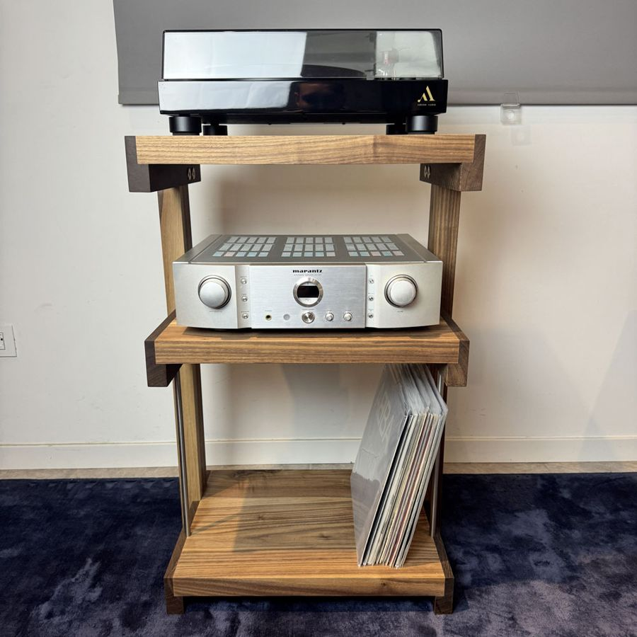

Come isolare il giradischi dalle vibrazioni Mobile, casse, pavimento e bolla: cosa fare perché la puntina legga solo il disco
Rimbombi, bassi confusi, la puntina che salta quando qualcuno cammina: quasi sempre è colpa delle vibrazioni. Ecco da dove arrivano e come fermarle, partendo dalle soluzioni più semplici.

Perché il giradischi è così sensibile.
La puntina legge movimenti di pochi millesimi di millimetro incisi nel solco. Non sa distinguere tra il solco e tutto il resto: se il mobile vibra, se il pavimento si muove sotto i passi, se i bassi delle casse fanno tremare il piano, la puntina legge anche quello e lo manda all'amplificatore.
Il risultato può essere un rimbombo nei bassi, un suono confuso, la puntina che salta quando qualcuno cammina. Nei casi peggiori nasce un innesco: il suono delle casse fa vibrare il giradischi, la puntina lo raccoglie, l'amplificatore lo rimanda alle casse e il rimbombo cresce.
Un mobile rigido e pesante.
La prima difesa è il mobile. Deve essere stabile, non traballare quando lo tocchi e non flettere sotto il peso. Un mobile leggero o con ripiani sottili fa da cassa di risonanza; un mobile in legno massello, con ripiani spessi e ben incastrati, smorza le vibrazioni invece di amplificarle.
Il giradischi sta meglio sul piano superiore, che è il punto più stabile e più lontano dal pavimento. È così che ho progettato il Vinyl: giradischi in alto, amplificatore al centro e i dischi in basso, dove il loro peso tiene il mobile ancora più fermo.
Lontano dalle casse.
Mettere le casse sullo stesso mobile del giradischi è l'errore più comune. I diffusori vibrano mentre suonano e trasmettono le vibrazioni al piano su cui appoggiano. Tieni le casse su stand per diffusori, separate dal mobile del giradischi, e se possibile non puntarle direttamente verso il giradischi.
In bolla.
Il giradischi deve essere perfettamente orizzontale. Se è inclinato, la puntina lavora storta nel solco, consuma il disco in modo irregolare e il suono perde precisione. Appoggia una piccola livella sul piatto, in due direzioni, e regola i piedini del giradischi o del mobile finché la bolla è al centro.
Il pavimento.
I pavimenti in legno, e soprattutto il parquet flottante, trasmettono i passi. Su un pavimento in piastrelle sopra un massetto il problema è molto minore. Se la puntina salta quando qualcuno cammina, aiutano un mobile più pesante, l'appoggio vicino a una parete portante o, nei casi difficili, una mensola fissata al muro.
Piedini e basi antivibranti.
Piedini disaccoppianti, basi isolanti e piattaforme sotto il giradischi possono aiutare, ma vengono dopo. Prima sistema il mobile, la bolla e la distanza dalle casse: spesso basta questo. Se il problema resta, prova un accessorio alla volta, così capisci cosa funziona davvero.
Una prova semplice.
Con il volume basso, appoggia la puntina su un disco fermo. Batti piano con un dito sul mobile, poi cammina vicino al giradischi. Se dai diffusori senti i colpi o i passi, le vibrazioni arrivano alla puntina e vale la pena intervenire. Ripeti la prova dopo ogni modifica.
Domande frequenti.
Il giradischi può stare sullo stesso mobile delle casse?
Meglio di no. I diffusori fanno vibrare il mobile e la puntina raccoglie quelle vibrazioni. Se proprio devono stare vicini, metti le casse su stand o almeno su appoggi che le stacchino dal piano.
Come capisco se il giradischi prende vibrazioni?
Con il volume basso, appoggia la puntina su un disco fermo e batti piano con un dito sul mobile, poi cammina vicino al giradischi. Se lo senti dai diffusori, le vibrazioni arrivano alla puntina.
Il giradischi deve essere in bolla?
Sì. Un giradischi inclinato fa lavorare la puntina storta nel solco e il suono ne risente. Controlla il piatto con una livella e regola i piedini del giradischi o del mobile.
Su un parquet flottante cosa conviene fare?
Il parquet flottante trasmette molto i passi. Un mobile pesante e rigido aiuta, e se non basta una mensola fissata al muro portante isola il giradischi dal pavimento.
Servono piedini antivibranti?
Possono aiutare, ma vengono dopo: prima un mobile rigido, in bolla e lontano dalle casse. Se il problema resta, piedini o basi disaccoppianti sotto il giradischi sono il passo successivo.